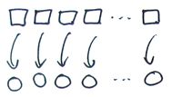
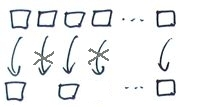
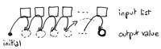
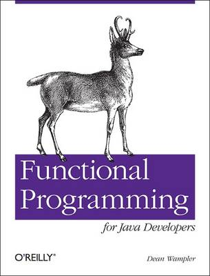

Lessons of Functional programming
| Author: |
Vassil Dichev |
|---|
| Date: |
12.09.2015 |
|---|
Who am I?
- Java, J2EE, Spring, XML, bla bla bla
- Scala
- Not an academic
Why learn?
Development is moving towards functional programming
...or is, at least, increasingly influenced by it.
Great paradigm shifts
- GOTO → structured programming
- Manual memory management → Garbage collection
- Imperative programming → Functional programming
Benefits
- Correctness
- Compositionality
- Flexible execution (parallelization)
Structured programming
- Subroutines, procedures, functions
- Correct
- cannot send execution to arbitrary place
- Composable
- can call functions from different locations
Garbage collection
- Correct
- no pointer arithmetic
- memory leaks
- Composable
- responsibility to clean up
- race conditions
- Flexible execution
- enables concurrent/parallel code
Function definition
- Math: mapping inputs to outputs
- Programming: decompose and reuse solutions
Definitions of FP
- Referential transparency
- Functions return same values
- Controlled side effects
- Functions as first-class
Finding FP
- Excel
- XSLT
- REST
- Hadoop, Google MapReduce...
- SQL SELECT statements
Side effects- first lesson
PROCEDURE ToFahrenheit(x: REAL);
BEGIN
WriteLn(9/5 * x + 32);
END
FUNCTION ToFahrenheit(x: REAL): REAL;
BEGIN
ToFahrenheit := 9/5 * x + 32;
END
Side effects- first lesson
public static void fahrenheit(double c) {
out.println(1.8 * c + 32);
}
public static double fahrenheit(double c) {
return 1.8 * c + 32;
}
Referential transparency
- Debugging
- Testing
- Reproducible- need just inputs
- State- no huge setUp methods
Benefits
- Correctness
- Compositionality
- no dependency on setup code
- Flexible execution (parallelization)
Immutability
Java String
Joda time
Best practices are FP
Classes should be immutable unless there's a very good reason to make them mutable
—Joshua Bloch (Effective Java)
Java Concurrency
Immutable objects are simple.
Immutable objects are also safer.
Immutable objects are always thread-safe.
Immutability
- thread-safe
- don't need copy and clone
- easily cached
- good Set and HashMap keys
Benefits
- Correctness
- functions can't change your data
- Compositionality
- Flexible execution (parallelization)
HDYWTDT?
i = 1
i = 2
Multiple declarations of `i'
i = 1
i = 2
exception error: no match of right
hand side value 2
Life without mutation
- Recursion
- Functional data structures
- Local mutation
- If a tree falls in the forest and nobody hears it, does it make a sound?
Iterative factorial
public static long factorial(int num) {
long result = 1;
for(int i = 2; i <= num; i++) {
result *= i;
}
return result;
}
Recursive factorial
public static long factorial(int num) {
if (num == 0) {
return 1;
} else {
return num * factorial(num - 1);
}
}
Recursion and the stack

Functional data structures

Git graph

Variable capture
Must be effectively final
int sum = 0;
list.forEach(e -> { sum += e.size(); });
Race conditions
To evolve the language in 2011 in a way that makes concurrent and parallel operations even more dangerous would be foolish.
—Brian Goetz
Higher-order functions
Functions, which take other functions as parameters and/or return functions.
|
|

|
- filter (select, find_all, findAll)
|

|
|
|

|
Combinators are reusable!
Higher-order functions are also called combinators
Combinators are arguably the most reusable constructs we have in programming
—Dean Wampler
|

|
New idioms
list.map(e -> e.size())
.reduce(0, (a, b) -> a+b);
SQL and higher-order functions
- SELECT → map
- WHERE → filter
- JOIN → flatMap
- SQL
SELECT age, name from PEOPLE where age > 18
people.filter(_.age > 18).
map(p => (p.age, p.name))
Expressions everywhere
- transformations
- REPL (Read-Eval-Print Loop)- interactive shell
- Declarative- DSLs
Patterns are FP
- Command
- Strategy
- Builder
- Factory
Languages
map (2 *) [1, 2, 3]
filter even [1, 2, 3]
map(fun(X) -> 2 * X end, [1,2,3]).
filter(fun(X) -> X rem 2 == 0 end, [1,2,3]).
JVM languages
list.map(2 * _)
list.filter(_ % 2 == 0)
(map #(* 2 %) '(1 2 3))
(filter #(= (mod % 2) 0) '(1 2 3))
Java libraries
- Guava
- lambdaj
- FunctionalJava
Summary
- Two definitions of Functional programming
- First-class functions
- Referential transparency
- Both have benefits
- Go gently; no need to go FP all the way
- Don't panic- you know this stuff!